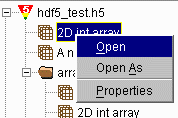
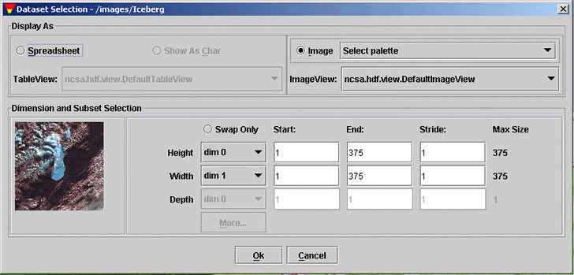
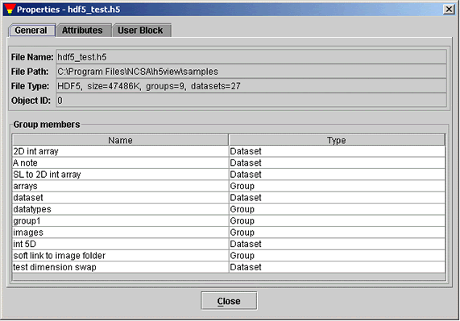
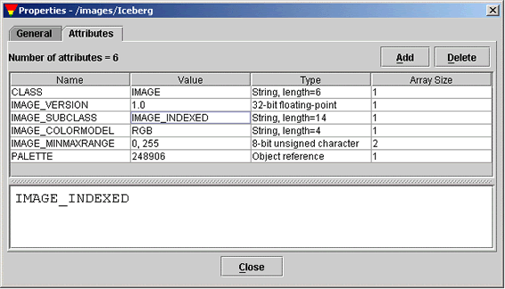
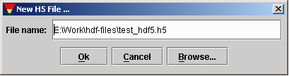
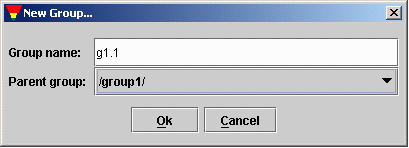
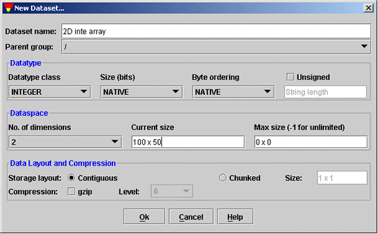
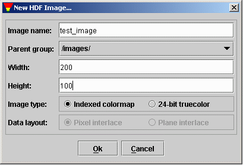
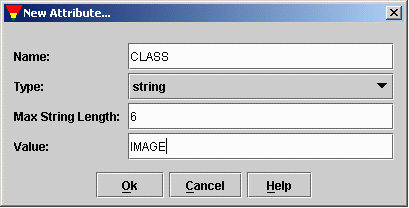

[Index] [1] [2] [3] [4] [5] [6] [7]
The Tree Viewer (or panel) shows the objects in each open file, and supports the navigation and editing of those objects. Multiple files can be viewed and edited, and both HDF4 and HDF5 files can be opened. The viewing and editing operations work for both HDF4 and HDF5, although some operations cannot be implemented for HDF4.
Every HDF5 object appears in at least one group. A set of objects can be stored together in a group. You can use the group object API functions to create and manipulate the groups. With the groups, you can organize the data objects in an HDF file. Objects in HDF4 may or may not belong to a group. An object that does not belong to any group is called a lone object, such as lone Vdata. To map HDF4 structure to HDF5 structure, a "dummy" root group is created in the tree view and lone objects are put at the root group.
Since objects can have names in more than one group, the set of all objects in an HDF file is a directed graph. It is difficult to manipulate and browse the graph on a 2-D virtual screen. Instead of showing the directed graph of the HDF file structure, HDFView displays HDF objects in a conventional structure as a tree of "folders", breaking the "loops" in the graph when necessary. The tree viewer of HDFView provides users an easy way to browse and manage HDF data objects in an HDF file. The following icons are used to represent HDF objects:
Upon opening an HDF file, HDFView displays the tree structure of the HDF file in the tree viewer, which is the left panel in the HDFView window. Every HDF file has exactly one root group that is created when the file is created. The root group is added to the root of the tree. When two or more files are open, the root groups of the files are listed at the root in the tree view.
Groups are presented as folders in the tree viewer. Opening and closing folders, you can browse the individual HDF objects in the HDF file. Datasets, images and tables are leaf objects in the tree. Clicking a leaf object allows you to see the content of the object displayed in the data/document window in the right panel of the HDFView window. Figure 4.1 illustrates that an HDF4 file, annras.hdf, and an HDF5 file, hdf5_test.h5, are currently open by the HDFView.

Figure 4.1: The Tree Viewer
To select an object in the tree, point the mouse at the object and click once on the object. You can open the data content of the selected data object from the menu bar or from the popup menu.
The popup menu appears by clicking the right mouse button on the object in the tree view. When a command is selected from the popup menu, the command action will be taken on the object clicked.

The Object Popup Menu
The Tree View allows the user to navigate the structure of the HDF file, to select individual objects, and to view the content of the selected object.
You can open a data object in the tree by a double-mouse-click or selecting the "Open" command from the menu bar or the popup menu. By default, data content is displayed as an image, a table or text based on its datatype. See the following chapters for a detailed discussion of the data viewers.
If the data value is not in memory, the "Open" action will load the data from the file and display it. If the data is already loaded into memory, it will just display the data. If you want to refresh data in memory or open a dataset with a different selection (subset or display option), you have to use the "Open As" command.
Using "Open As", you can select a subset of the dataset to display or change the default display options. For example, you can display the data values of an image in a spreadsheet, or show a scalar dataset as an image. For multi-dimension dataset, you can select any of two dimensions to display. The mouse-drag navigator allows you to select a subset by dragging the mouse over the preview image. For more details about how to select a subset and dimensions, read 5.2 Subset and Dimension Selection.
The "Start" field(s) determines the starting coordinate of the selected area.
The "End" field(s) determines the ending coordinate of the selected area.
The "Stride" field(s) chooses array locations from the dataspace with each value in
the stride array determining how many elements to move in each dimension. Setting
a value in the stride array to 1 moves to each element in that dimension of the
dataspace; setting a value of 2 in the stride array moves to every
other element in that dimension of the dataspace. In other words, the stride
determines the number of elements to move from the start location in each dimension.
Stride values of 0 are not allowed. If the stride parameter is NULL, a contiguous
hyperslab is selected (as if each value in the stride array was set to all 1's).

The Display Option
The metadata dialog box appears by right-clicking the object (icon) in the tree or by selecting the "Properties" command from the "Object" menu. The HDF metadata display contains two tabbed panes, showing the general metadata and the user-defined attributes.
General metadata includes the name, type, and path of the data object.
For groups, general metadata also includes the name, type, and size of all the members of the group. The following figure shows an example of the general information of a group.

General Properties of an HDF group.
For a dataset (or image), the general metadata also includes the dataspace information (rank, current, and maximum size of each dimension), datatype information (type, size, and order). The following figure shows an example of the metadata for a dataset.

General Properties of a Dataset.
To see the attributes of an object, click the "Attribute" tab in the object's Properties window. The name, type, size, and value of all attributes of the selected object are displayed in a table. The following figure shows an example of the attribute display.

HDF Attributes
The HDFView allows you to create and save a file and to add and delete objects in the file. Users should be aware that all the changes are made to the actual stored file. This version does not support the undo operation; editing results cannot be automatically recovered.
The file creation dialog box appears when you choose the "New HDF4/5" command from the File menu. Choose the path and the file name you want to create and click the "Ok" button from the New File dialog box. A new file will be created with an empty root group.

Create New File
Select "Save As" from the File menu to save the currently selected file into a new file of the same format, i.e. HDF4 to HDF4 or HDF5 to HDF5. (HDFView does not support HDF4 to HDF5 conversion.)
For HDF5, a new file is written that does not contain the inaccessible objects, and it packs the unusable space. Thus, the new file may be smaller than the original. Dataset or attributes values that are object references can not be updated. For HDF4, a new file is the exact copy, same file content and file size.
To create a new group, select the "New Group" command from the Object menu. Then, give the name of the new group and the parent group to which the new group is to be added.

Create New Group
To create a new dataset, select the "New Dataset" command from the Object menu. Then, specify the name, path, datatype, dataspace, and storage layout and compression of the new dataset. The current version only supports creating simple datatypes. This version cannot create an HDF4 VData or an HDF5 compound dataset; however, these objects can be viewed. Supported datatypes include integers (byte, short, int, long), float, double, and character. For HDF5, it also includes String and Object references.

Create New Dataset
The "New Image" command from the Object menu allows you to create an empty image with default image attributes. The new image does not have any palette attached to it. You can create two kinds of images: an indexed image with 256 colors and a 24-bit true color image.

Create New Image
To delete objects from the tree, you first select the objects, then choose the "Delete" command from the Object menu. A confirmation dialog appears to verify that you want to delete the selected objects.
Deleting an object from an HDF4 file is not supported. Deleting the HDF5 object calls the H5Gunlink() function of the HDF5 library. The unlink function removes the link, and when an object has no remaining links, it can be deleted. However, the HDF5 library does not currently reclaim the space in the file. This means that the size of the file does not shrink even though objects are removed. (Users are cautioned that repeatedly creating and deleting objects with H5View can cause the HDF5 file to grow.) To get rid of the inaccessible objects, you have to save the current file into a new file and rename the new file to the current file.
HDFView allows you to copy an object and paste it in the same file or a different file of the same type. To copy and paste an HDF5 object from the tree, select the object and then select the "Copy" command from the Object menu. You then select a group by a single click on the group to which the object is pasted. After you select the "Paste" command, the object is copied into the selected group. HDFView does not allow you to copy/paste an object of different format. The "Paste" command will create a new object in the selected group instead of making a hard link.
You can also select multiple objects in the tree and apply the copy/paste action into the selected objects. Selection can be contiguous and discontiguous. To make a contiguous selection, hold down the Shift key and click on the first object, then click on the second object while holding down the Shift key. All the objects between the two objects will be selected inclusively. To make a discontiguous selection, hold down the Ctrl key while clicking the objects with the left mouse button. The objects being clicked will be selected. The rest of the operation of copying/pasting multiple objects is the same as that of copying/pasting a single object.
Copying a group will also copy all the descendents of the group. Copying a root group is not allowed.
To add an attribute, click the "Add" button on the Attribute panel. You can create an attribute of a string, scalar, and 1D array of simple datatypes. Attributes of multiple dimensions or a compound datatype are not supported.

Create New Attribute
To change the value of an attribute, type the new value into the cell. Only string and scalar attributes can be modified. The new value must be interpretable as a value of the correct type for the attribute. For a string value, the value typed will be truncated to the size of the attribute if it is longer than the declared size of the attribute. A valid data value must follow the rules specified by the section 5.4 Change Data Value.
To delete an attribute, select the attribute and click the "Delete" button. Deleting an attribute of an HDF4 object is not supported.
[Index] [1] [2] [3] [4] [5] [6] [7]